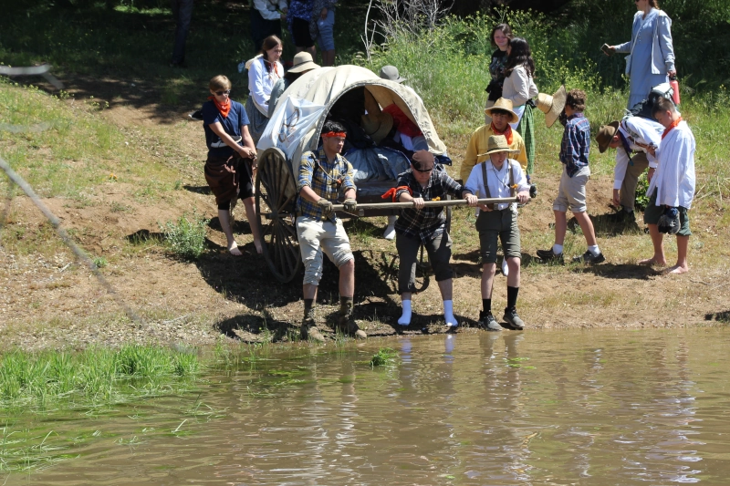
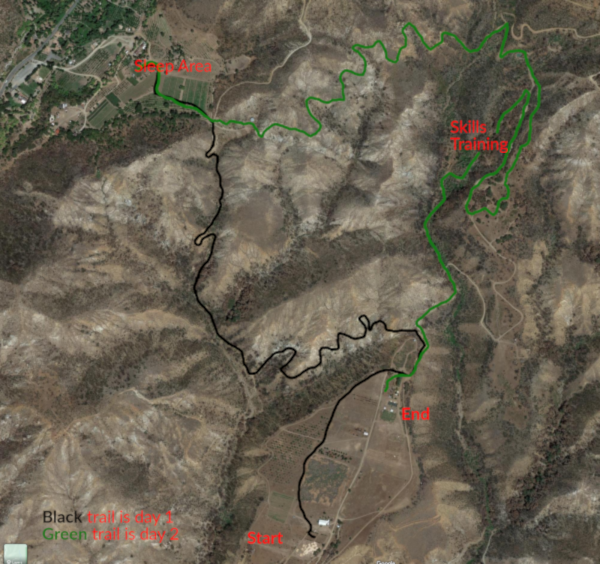

What is a Trek
A trek is when when youth members of the church of Jesus Christ of Latter-day Saints re-enact pushing and pulling handcarts for 2 or more days.
What is taught
The members that participate in a trek event learn a variety of different things.
- What type of fortitude was required to push/pull a handcart for a few months and the team work required on this adventure.
- Learned skills that were needed to survive on the trail, such as roping, sawing wood, shooting, hatchet throwing, etc.
- Heard stories about the pioneers and the struggles that they went through and what we can learn from them.
Where was this trek held
This pioneer trek was help at a working farm called Riley's Farm in Oak Glenn, California
